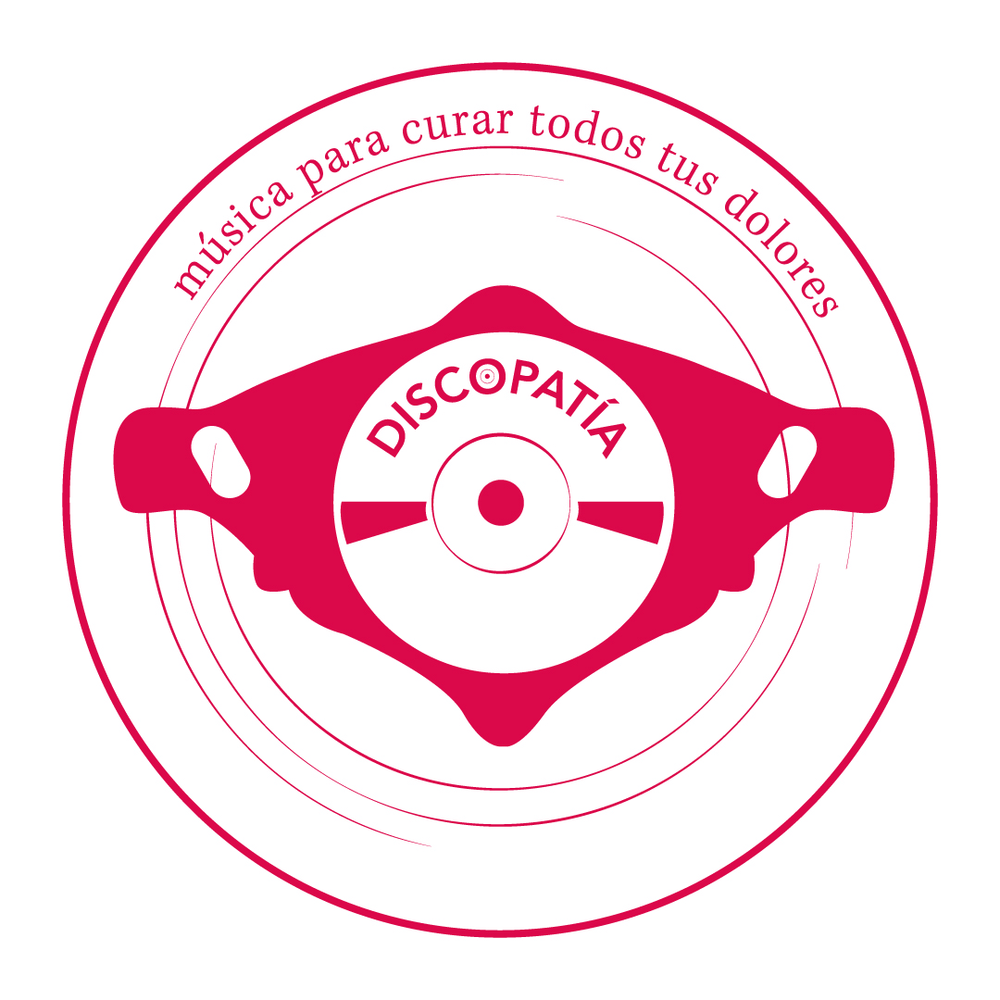

Rock alternativo para pacientes crónicos. La cura oficial para los treinta y pico.
🎟️ Entradas: Tributo a The Strokes
Viernes 27 Nov · $20.000 (incluye pola)
📺 Ver nuestros Shorts y Ensayos en YouTube
📸 Seguirnos en Instagram